Health workforce
Training, supply, productivity, and the conditions that enable care.
001 — Health policy researcher
I am a health policy researcher with nearly a decade of experience leading healthcare analytics initiatives, managing technical teams, and supporting healthcare-invested clients.
Explore002 — Research
An evidence-first practice
for health systems change.
My current and prior research investigates how health policy is shaped, implemented, and experienced. I work across quantitative and mixed-methods research to surface practical insights for decision-makers.
View Mathematica profile ↗Training, supply, productivity, and the conditions that enable care.
Medicaid and Medicare policy, access, and program design.
Data systems that make a complex workforce more visible.
How incentives affect the delivery of care in practice.
003 — Selected work
Health workforce · 2021
Tools and data to help leaders anticipate workforce needs during the pandemic.
↗Hospital systems · 2024
Examining whether financial resources translated into staffing capacity.
↗Workforce policy · 2020
Tracing how market growth relates to emergency physician supply.
↗004 — Data, made legible
Interactive tools help process and interpret big data. Explore my work in data visualization and public-facing research tools.
Visit Tableau Public ↗005 — Personal portfolio
A creative practice
outside the research.
When I’m away from the data, I make time to dabble in the arts for the tactile, playful, and imperfect—from painting and ceramics to digital illustrations.
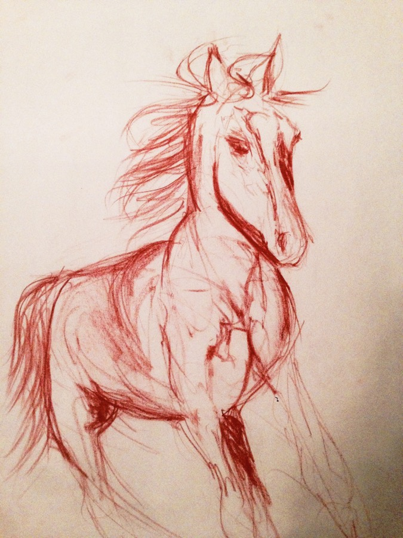
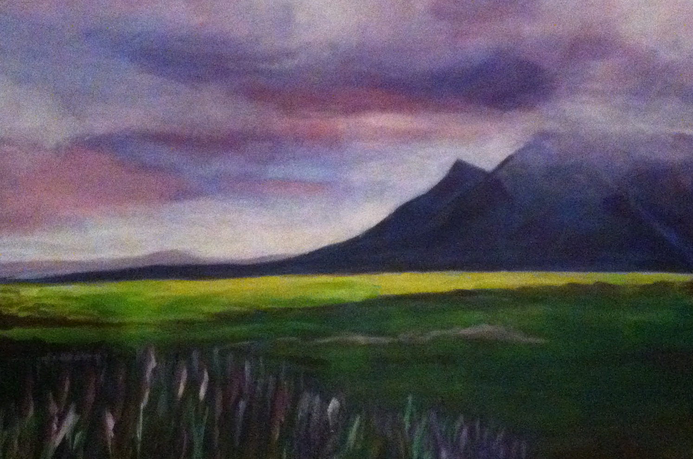
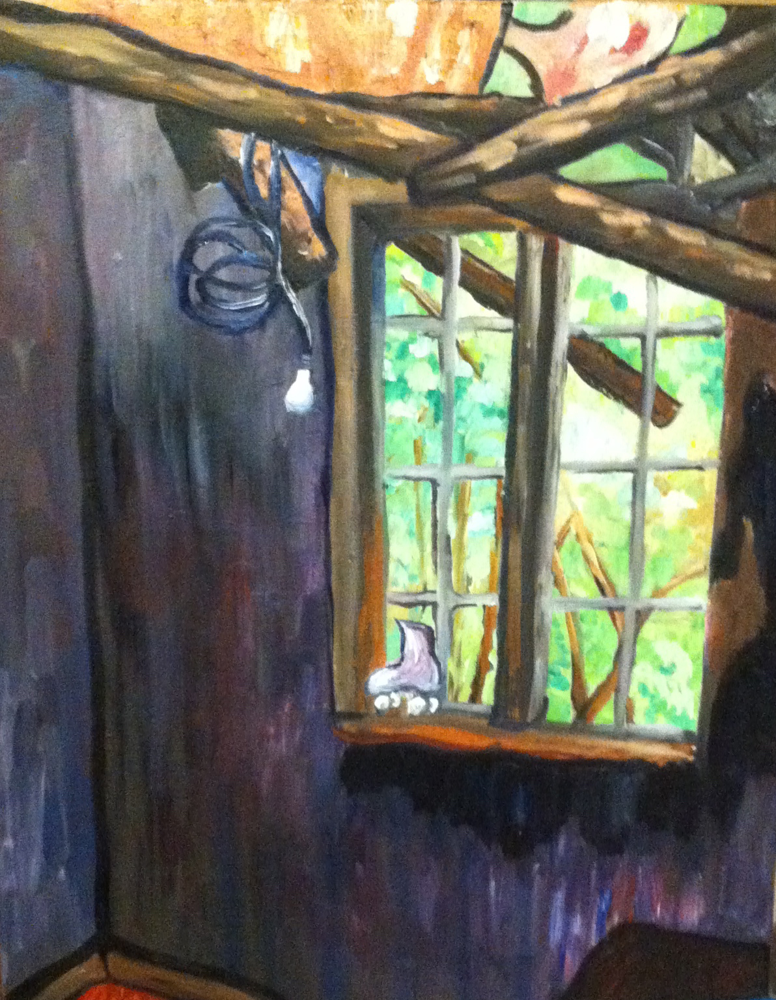
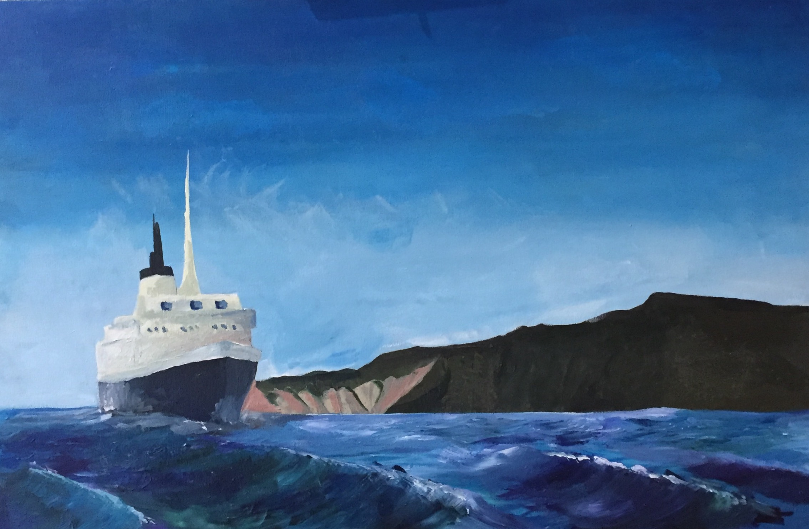
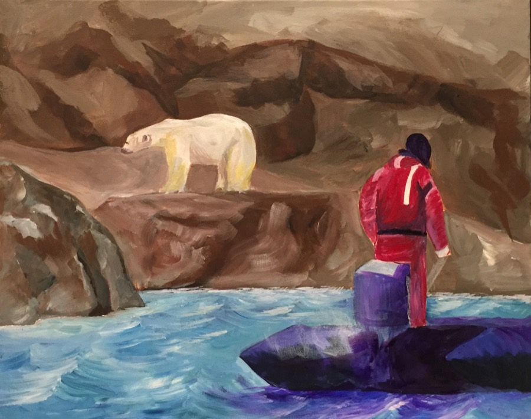
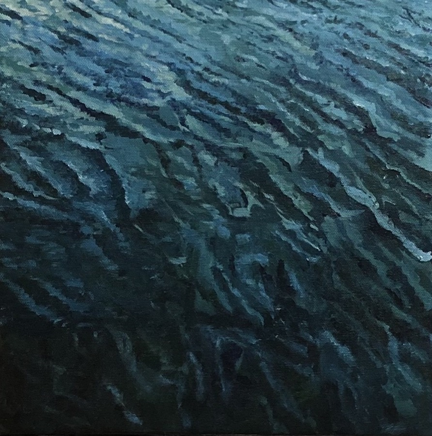
Artwork
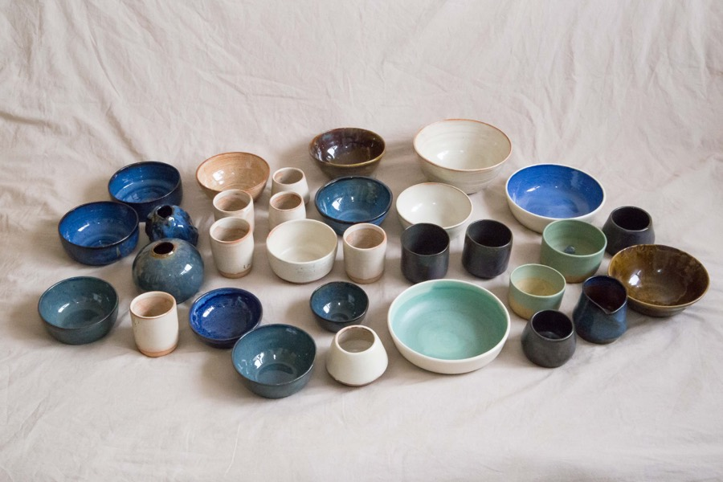
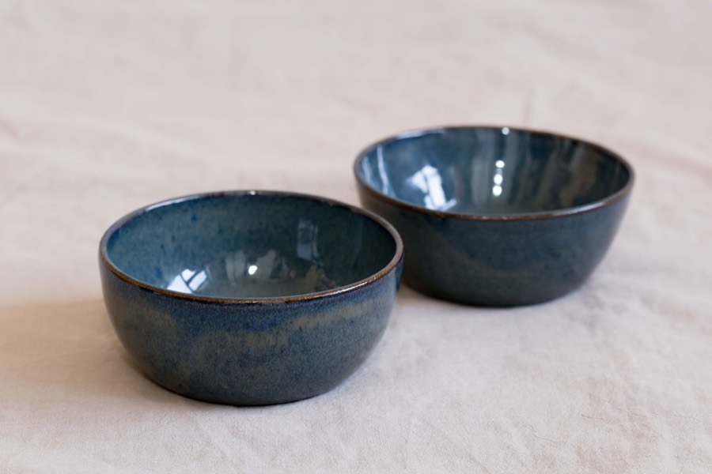
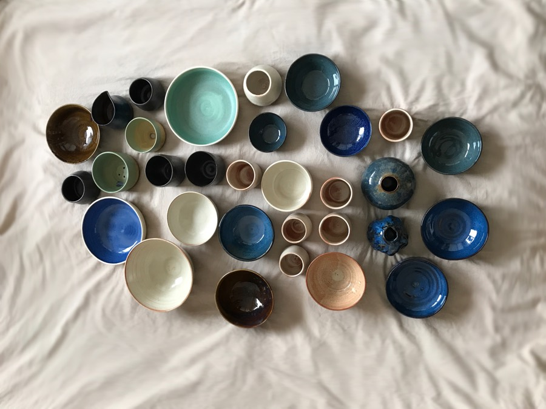
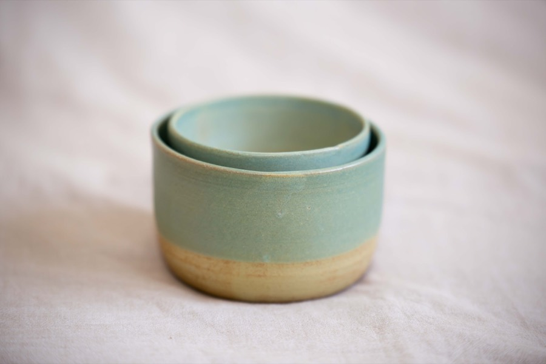
Ceramics
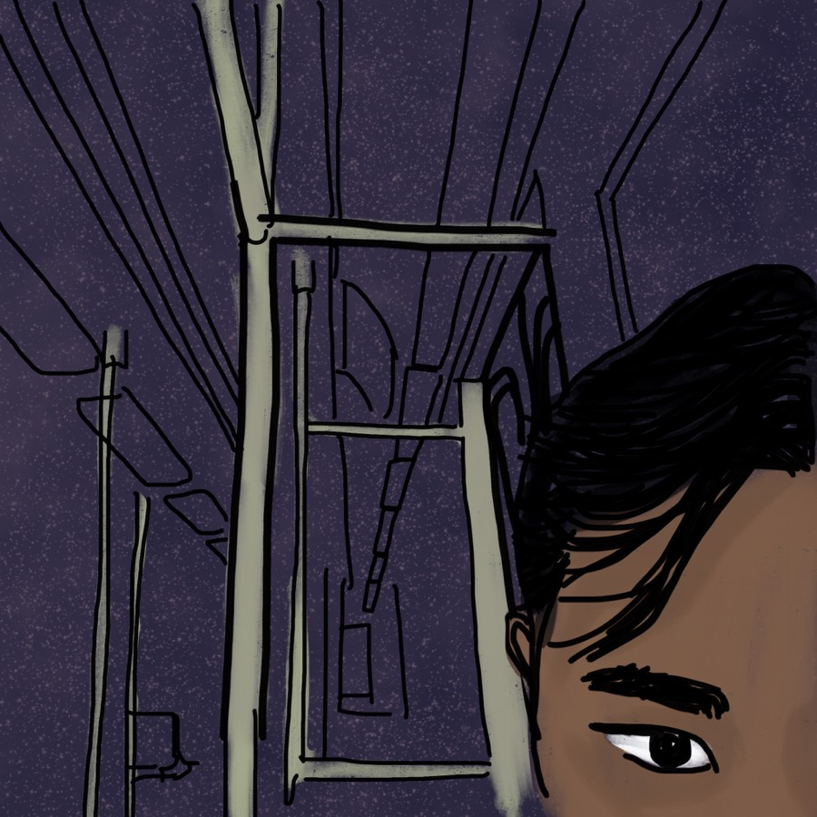
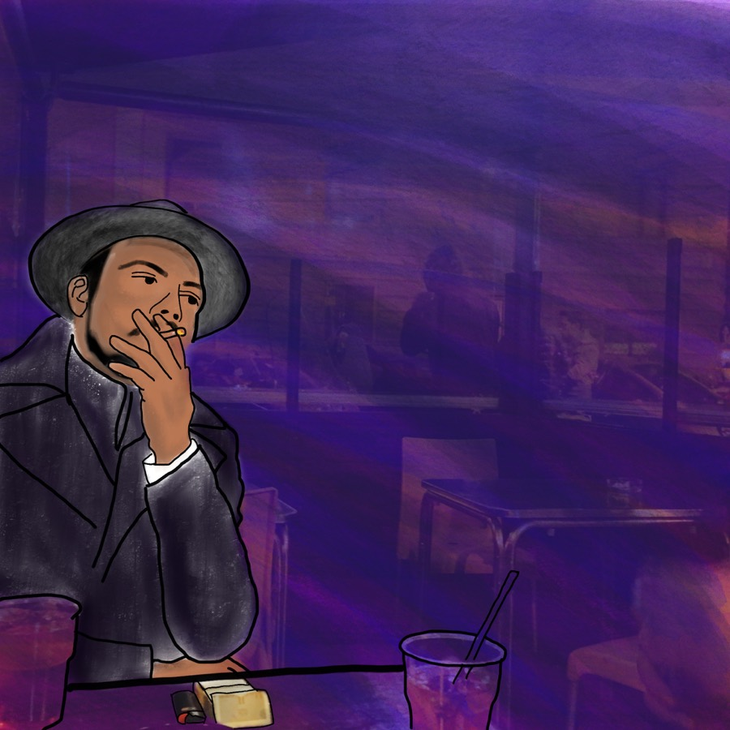


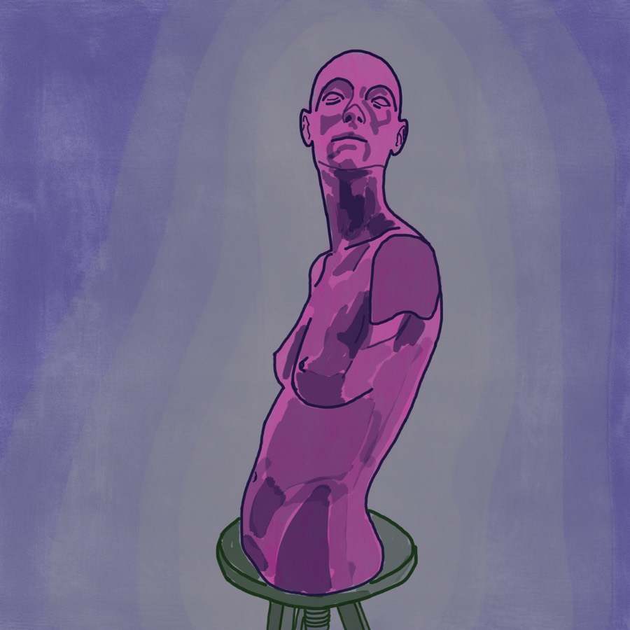
Digital art
006 — About
Washington, DC
Toronto, ON
I’m a researcher at Mathematica with a PhD in Health Policy from the George Washington University, an MPH from Columbia University, and a BSc (Hon) in Global Health from the University of Toronto.
Outside of research, I remain attached to my roots in Toronto, Canada as a lifelong hockey fan who enjoys the quiet of camping, canoeing, hiking, and most importantly, family time.
Let’s connect ↗Professional journey
Select a point in time to locate the chapter.